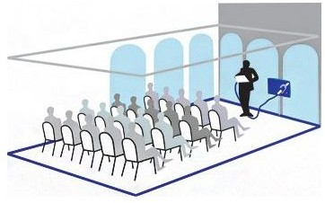
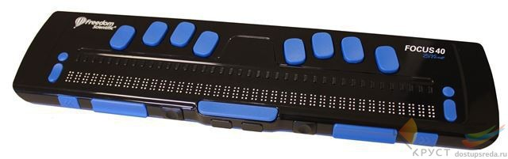
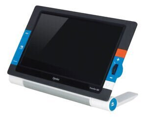
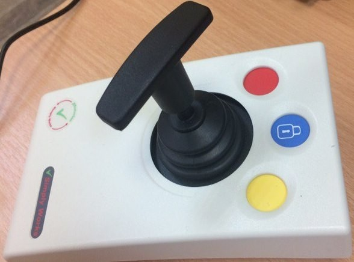

Информационная индукционная система для слабослышащих
Стационарные и портативные устройства, которые позволяют пользователям слуховых аппаратов и кохлеарных имплантов лучше слышать в условиях окружающего шума и реверберации. Индукционные системы также служат для передачи голоса или иного аудиосигнала с микрофона непосредственно в слуховые аппараты или кохлеарные импланты учащихся
Дисплей Брайля
Брайлевский дисплей — устройство вывода информации из компьютеров с целью её тактильного восприятия, предназначенное для отображения текстовой информации в виде шеститочечных символов азбуки Брайля. Брайлевские дисплеи делают возможным использование современных компьютеров незрячими и слабовидящими людьми.
Портативный видеоувеличитель
Портативный видеоувеличитель — это устройство, предназначенное для помощи людям с нарушениями зрения. Оно позволяет увеличивать текст и изображения, делая их более четкими и доступными для восприятия. Компактные размеры и легкий вес делают это устройство удобными для переноски.
Компьютерный джойстик
Компьютерный джойстик полностью заменяет компьютерную мышь для удобства работы людей с нарушением моторики. Предназначен для управления курсором вместо компьютерной мыши. На верхней части джойстика расположены кнопки, соответствующие правой и левой кнопкам обычной компьютерной мыши. На джойстике располагается кнопка питания и световой индикатор, показывающий переключение режимов вкл./выкл.